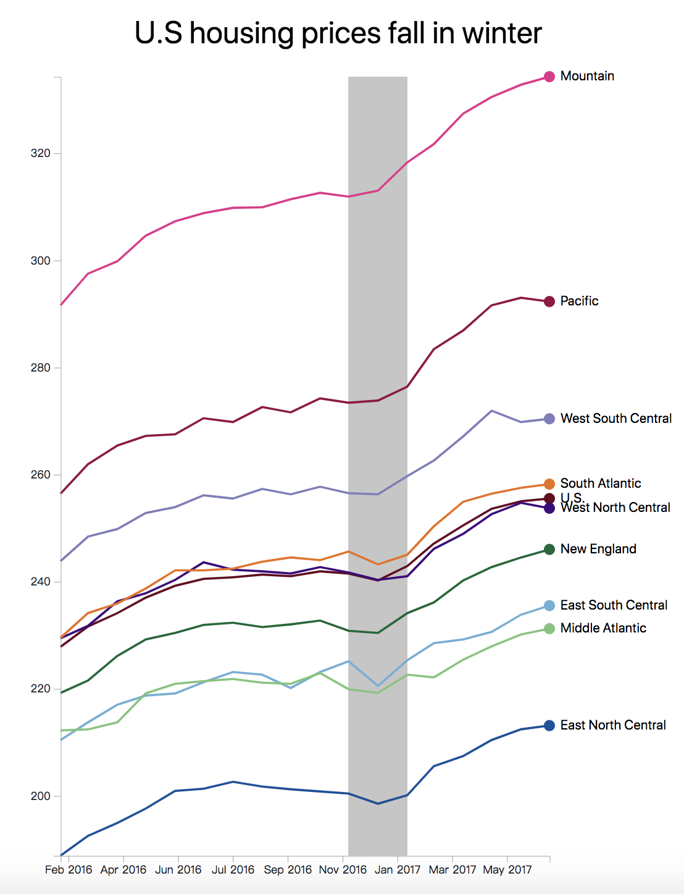
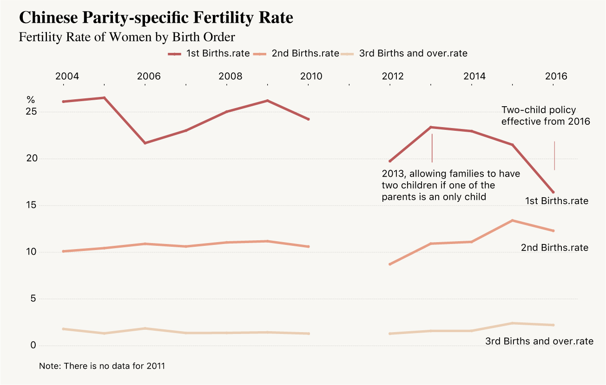

工具: Python, Pandas, Matplotlib, Selenium, BeautifulSoup, JavaScript, D3.js, QGIS, Leaflet, Mapbox, Illustrator

Finding home: the past 50 years of refugees crisis

Who is the vainest country?

What do critics think of Asian Movies?

Is the two-child policy welcomed by Chinese?
The US is suffering less Chinese students

A sketch of Beijing's house rent
Goodbye, world! Last words spoken by criminals before execution

New Yorker taste on bubble tea
静态图表
工具: JavaScript, D3.js, Illustrator

NBA radar cahrt by D3

Birth chart by D3

NYC temperature chart by D3

Cities' temperature chart by D3

Cities' temperature chart by D3
Cities' temperature chart by D3

American middle class income chart by D3

Japan and USA fertility rate over the years by D3

NBA Radar charts by D3

Climate change over the years by D3
Global plastic surgery procedures in 2016
Multiple pie charts by D3

Global plastic surgery procedures in gender

Global plastic surgery procedures in USA

U.S house price line graph

Global plastic surgery procedures

China parity-specific fertility rate
Total fertility rate in China over the years

Young and old people ratio in China over the years
Review text analysis for bubble tea on Yelp

Bubble tea store with most good reviews in NY

Bubble tea store numbers in NY
Most word spoken by criminals before execution

Religious words spoke by criminals in their last statement

Religious words rate in races

Beijing rent price with distance to nearest subeay station
Decoration effect on the price on shared rent

The rent price in Beijing with room area

Numbers of U.S issued F-1 student visas to Chinese
Numbers of U.S issued F-1 student visas to Chinese VS in total
交互图表
工具: JavaScript, D3.js, QGIS, Leaflet, Mapbox

Force Bubble chart showing refugee numbers with continents

Animated multiple line chart showing refugee numbers over the years

Animated radius chart by D3

69 years typhoon hitting China

Stock price interactive by D3

Interactive line graph with D3
交互与静态地图
工具: JavaScript, D3.js, QGIS, Leaflet, Mapbox, Illustrator

Chinese cultural relics map

San Francisco Drug Issue maps
Latino population growth and dispersion in Chicago
What do critics think of Asian Movies?

A map of American powerplants and output

Countries with population world map

Non-stop flight destination from NY
Hex map of wolves in canada

2016 U.S election choropleth map

Small multiple maps of American powerplants and output

Beijing house rent heat map
工具: Final Cut Pro, Adobe Premiere, DSLR for filming, TASCAM for audio recording
小组项目：谢菲尔德街头涂鸦
合作: Sara Mhaidli, Shirin Namiq, Yihui Wang, Yunga Wu